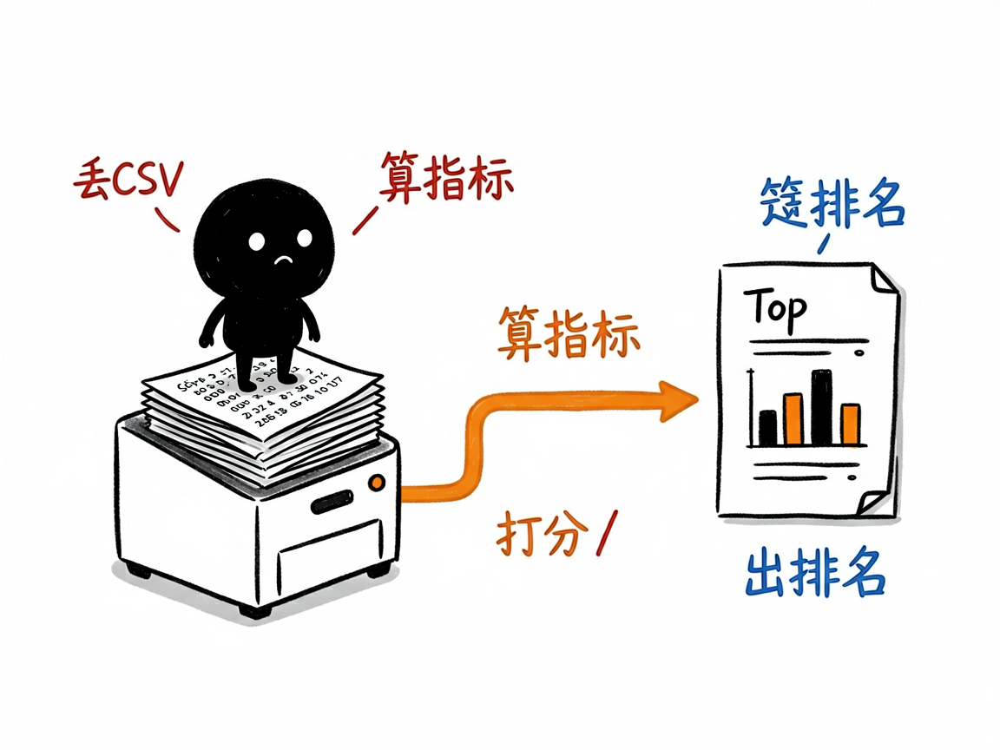
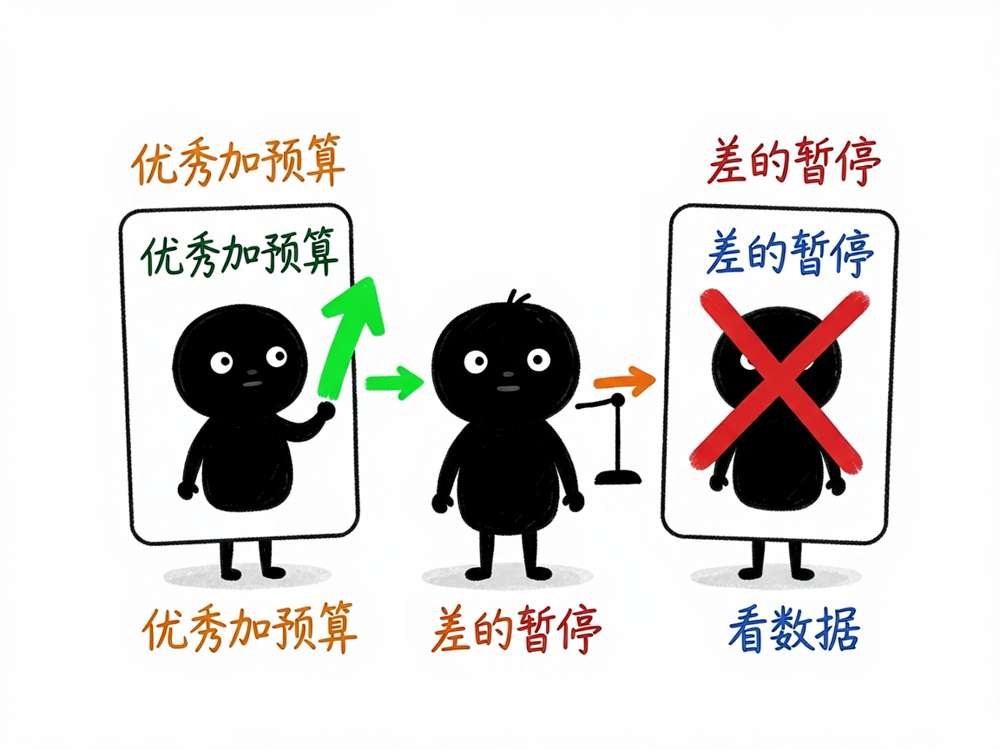

投了 Facebook 广告却看不懂数据？它帮你一眼分清好坏 —— facebook-ads-analyzer 介绍
你花真金白银在 Facebook 上投广告，月底从后台导出一张几百行的 CSV 数据表，密密麻麻全是展示量、花费、点击这些数字。哪个广告真正带来订单、哪个广告纯粹在烧钱，光靠肉眼根本看不过来。facebook-ads-analyzer 就是干这个的：你把导出的数据文件交给它，它帮你算出点击率、转化率这些关键指标，给每条广告打分评级，直接告诉你哪些该加预算、哪些该停掉。
facebook-ads-analyzer 就是来解决这件事的。
你给它一份 Facebook 广告后台导出的 CSV 文件，它还你一份带评分、带排名、带优化建议的分析报告。

它到底能做什么
- 自动读表算指标：读取 Facebook Ads Manager 导出的 CSV（能识别中文列名和特殊编码），算出点击率（CTR）、单次点击费用（CPC）、千次展示费用（CPM）、互动率、转化率等。
- 给每条广告打分评级：用加权公式综合评分，分成"优秀 / 中等 / 差"三档（优秀大概占总量的前 20%）。
- 排出 Top 10 和 Bottom 10：一眼看出表现最好和最差的广告分别是谁。
- 给可执行的优化建议：优秀广告建议加预算，中等的建议做 A/B 测试，差的建议暂停或重做。
- 出投放策略方案：给出保守、平衡、激进三套预算分配思路。
- 支持按地区、时间段对比：比如单独看香港或台湾的数据表现。

怎么用
你不需要记任何命令。在 codex / workbuddy 等 agent 装好 facebook-ads-analyzer 技能后，直接对 AI 说话就行：
场景 1：月底想看哪些广告在烧钱 你：这是我这个月 Facebook 广告后台导出的数据表，帮我看看哪些广告真赚钱、哪些纯粹在烧钱。 AI：它会算出每条广告的点击率、转化率等指标，打分排级，排出表现最好和最差的各 10 条，并直接告诉你哪些该加预算、哪些该停掉。
场景 2：不知道钱该往哪投 你：根据这份数据，给我一个下个月的预算分配思路。 AI：它会给出保守、平衡、激进三套投放方案，你按自己的风险偏好挑一套就行。
场景 3：想单独看某个地区 你：把香港和台湾的数据单独拉出来对比一下。 AI：它会按地区和时间段拆分数据，告诉你这两个市场各自的广告表现差异。
谁适合用
- 在 Facebook 上投广告、做独立站或品牌投放的电商卖家。
- 帮客户管广告投放的代运营、投手、优化师。
- 市场团队里需要定期复盘广告 ROI（投资回报）的人。
- 想用数据而不是感觉来决定"钱该往哪投"的创业者。
一点说明
它不是独立的可视化软件，而是一个给 AI 助手（如 codex / workbuddy）用的"技能包"。它只认 Facebook Ads Manager 导出的、带中文列名的 CSV，别的格式要先整理成对应字段（表格里需要的列包括账户名称、广告系列/组/广告名称、日期、国家、展示次数、花费金额等，越全越好）。具体评分权重和输出细节以项目里的 SKILL.md / REFERENCE.md 为准。